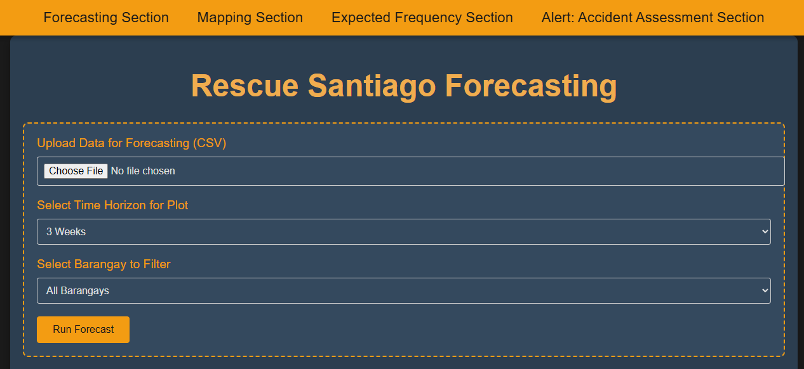
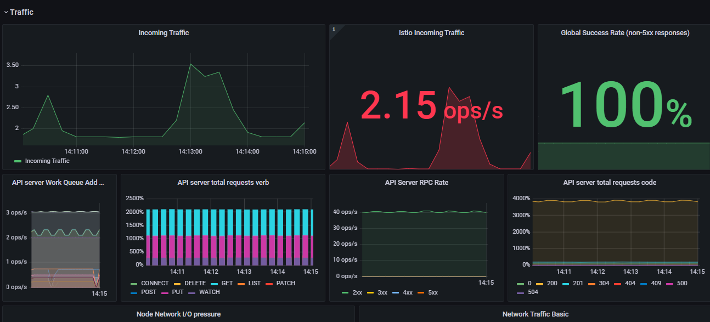
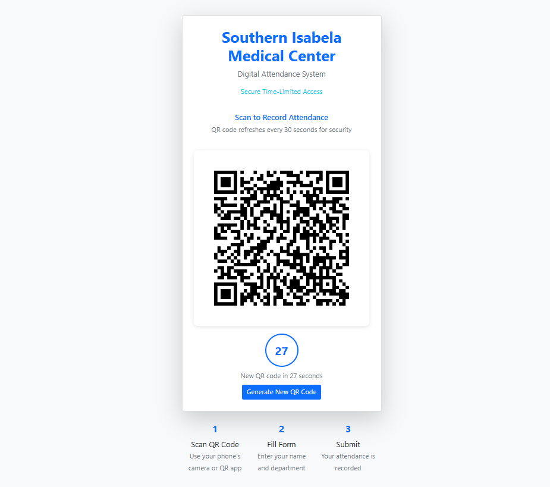

Data Analysis
Gathers, cleans, and interprets complex data sets to identify trends, create visualizations, and provide actionable insights that drive business decisions
Aspiring Data Analyst | CS Graduate | Future Computer Scientist
I am a motivated and detail-oriented individual with a strong interest in data analytics, software projects, and technology solutions. I enjoy creating simple, useful, and user-friendly systems that solve real problems.
I am currently building my skills in programming, web development, and system design. This portfolio showcases my CV, personal projects, technical skills, educational background, and work experience.
Download CVGathers, cleans, and interprets complex data sets to identify trends, create visualizations, and provide actionable insights that drive business decisions
Creating simple, responsive, and user-friendly websites using HTML, CSS, and JavaScript..
Assisting with computer troubleshooting, file organization, and basic technical tasks.

A data-driven project concept focused on identifying and predicting accident-prone locations for earlier intervention and safer planning.

A dashboard concept that visualizes latency, traffic, errors, and saturation to support clearer observability and faster troubleshooting.

A simple attendance solution that uses QR scanning to record entries accurately and reduce manual tracking errors.
School: Isabela State University Echague Main Campus
Year: 2021 - 2025 Graduated with GWA of 1.60
Company: Amdocs Philippines
Date: April – July 2025
Assisted in configuring monitoring alerts within Amdocs’ Pay2Reload system by using PostgreSQL for alert data storage and Grafana dashboards, applying the Four Golden Signals (latency, traffic, errors, saturation) under senior supervision to support system observability
Company: Public Employment Service Office
Date: August 2023 – August 2024
Performed data cleaning, organization, and validation of CHED-TPD scholar records under the Government Internship Program for Santiago City, ensuring accuracy and consistency of official education datasets while reporting progress to a supervising officer.
Date: 2024 – Present
Telephone: +63 969 295 4102
Email: islaczarerson@gmail.com
LinkedIn: Czar Erson Isla
GitHub: Han-Zei